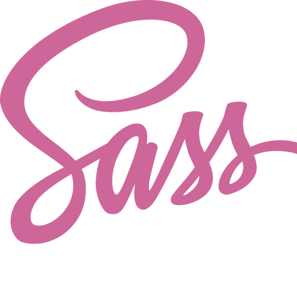
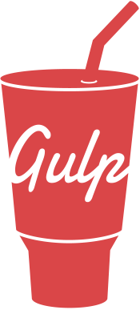

HTML5 + БЭМ
HTML5 создает каркас вашего сайта или приложения, а пятая версия позволит мне создавать более
SEO-оптимизированную структуру вашего продукта. При написании кода придерживаюсь методологии БЭМ.

CSS3 + SCSS
Этот язык стилей позволяет мне создавать абсолютно любой внешний вид вашего сайта или приложения.
Все ограничивается только вашей фантазией! При создании сайта использую препроцессор SASS/SCSS, что
ускоряет разработку в несколько раз.
Java Script
Этот язык программирования позволяет оживить все что угодно: слайдеры, окна, подсказки, вкладки,
получение данных от сервера и многое другое
Jquery
Библиотека Jquery позволит ускорить разработку. Без необходимости интегрировать в проект мы её не
будем, но навык работы с ней присутствует

Gulp + Webpack
При разработке проекта использую таск-менеджер Gulp и сборщик Webpack, что автоматизирует часть
рутинной работы и позволяет максимально ускорить процесс разработки продукта.
WORDPRESS + woocommerce
Помогу создать сайт на Wordpress или интернет-магазин на Woocommerce. Адаптирую и "натяну" любую
верстку на движок CMS, чтобы вы могли легко управлять своим сайтом.
PIXEL PERFECT
Что такое "Pixel Perfect"? При такой верстке сайт будет точь в точь повторять дизайн-макет и все
элементы на сайте будут расположены пиксель в пиксель.
ADAPTIVE WEB DESIGN
Сделаю адаптивную верстку используя современные технологии, ваш сайт будет отлично смотреться на
любых устройствах.